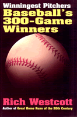

<body bgcolor="#FFFFFF" text="#000000" link="#0000FF" vlink="#CC0000" alink="#CC0000"><center><hr width="350" size="1" align="center" noshade>A detailed look at the few immortal 300 game winning pitchers<hr width="350" size="1" align="center" noshade><p><a href="https://cdcshoppingcart.uchicago.edu/Cart/ChicagoBook.aspx?ISBN=9781566399494&&PRESS=temple" target="_top">Buy this book!</a> | <a href="https://cdcshoppingcart.uchicago.edu/Cart/Cart.aspx?PRESS=temple" target="_top">View Cart</a> | <a href="https://cdcshoppingcart.uchicago.edu/Cart/Cart.aspx?PRESS=temple" target="_top">Check Out</a></p><p></p></center><!--none//--><h1>Winningest Pitchers</h1>
<H2>Baseball's 300-Game Winners</H2>
<H2><!-- Author of "Great Home Runs of the 20th Century" --></H2>
<h3>Rich Westcott</h3>
<P>paper 1-56639-949-1 $22.95, May 02, <FONT COLOR=#990033>Available</FONT>
<BR> 216 pp
5.5x8.25
22&nbsp;tables 37&nbsp;halftones
</P><BLOCKQUOTE><I>"Rich Westcott has done a fine job of researching and compiling the history of [special] major league pitchers of the last 120 years. He not only makes modern day fans aware that there are only a small number of 300-win pitchers to have played the game, but also the trials and tribulations as well as the strengths needed to accomplish this great feat."</I>
<br>&#151<b>Paul Owens</b>, senior advisor to the general manager, Philadelphia Phillies<I></I></BLOCKQUOTE>
<p>Since the beginning of major league baseball, more than 12,000 pitchers have thrown from the mound. Of them, only twenty have reached the ultimate goal of their profession: to be a 300-game winner.
<p>Rich Westcott, celebrated sports historian and journalist, offers in <I>Winningest Pitchers</I> profiles of each of those twenty pitchers, including Cy Young, Gaylord Perry, and Nolan Ryan. In small biographies, photographs, and stats, we gain a full picture of each of these rare players whose combined greatness contributes to baseball's continued importance to American athletic life.
<BR>&nbsp;<h2>Excerpt</h2><P>Excerpt available at <a href="http://www.temple.edu/tempress">www.temple.edu/tempress</a></p>
<BR>&nbsp;<h2>Reviews</h2>
<p><I>"Thousands upon thousands have pitched in the major leagues. Only 20 have won 300 games. Rich Westcott reveals how these men reached such an elite status with his </I>Winningest Pitchers: Baseball's 300 Game Winners<I>. It is a fascinating study of some of the greatest names in baseball."</I>
<br>&#151<b>Ed Hilt</b>, <I>Atlantic City Press</I>
<BR>&nbsp;<h2>Contents</h2><P>
<p>Introduction
<br>1. Pud Galvin: The First 300-Game Winner
<br>2. Tim Keefe: Strong Will Prevails
<br>3. Mickey Welch: A Lot to Smile About
<br>4. Old Koss Radbourn: Never Too Tired to Pitch
<br>5. John Clarkson: Thriving on Praise
<br>6. Kid Nichols: No Decade More Dazzling
<br>7. Cy Young: An Unapproachable Record
<br>8. Christy Mathewson: Idol of the Masses
<br>9. Eddie Plank: A Hitter's Nightmare
<br>10. Walter Johnson: Fastball Was Fearsome
<br>11. Grover Cleveland Alexander: From Triumph to Tragedy
<br>12. Lefty Grove: Hot-Tempered Fireballer
<br>13. Warren Spahn: The Complete Package
<br>14. Early Wynn: Expert in Intimidation
<br>15. Gaylord Perry: Master of Mind Games
<br>16. Steve Carlton: No Distractions Allowed
<br>17. Tom Seaver: Artist on the Mound
<br>18. Phil Niekro: King of the Knuckleballers
<br>19. Don Sutton: Never Missed a Turn
<br>20. Nolan Ryan: Strikeout Specialist
<br>21. Are 300-Game Winners a Vanishing Breed?
<br>Photo Credits
<br>About the Author
</P><BR>&nbsp;<H2>About the Author(s)</H2>
<table><tr><td valign="top"><img src="/tempress/authors/1632_au.gif" height="90" width="75"></td><td width="100%" valign="middle"><p><b>Rich Westcott</b> has some idea of what it's like to stand on the mound and face an opposing hitter, having been a pitcher himself before it became apparent that his fingers were more useful pounding keyboards than gripping baseballs. He is the author of 12 previous, including, most recently, <I><a href="1570_reg.html" target="_top">Great Home Runs of the 20th Century</a></I> and <I><a href="1533_reg.html" target="_top">A Century of Philadelphia Sports</a></I>, both published by Temple. His career as a writer and editor has covered forty years, and he is the founder and for fourteen years served as editor and publisher of <I>Phillies Report</I>. Westcott lives in Springfield, Pennsylvania.</P></td></tr></table>
<BR><H2>Subject Categories</H2>
<p><A HREF="/tempress/sports.html" TARGET="_top">Sports</a>
<BR><A HREF="/tempress/general.html" TARGET="_top">General Interest</a>
<BR><A HREF="/tempress/american.html" TARGET="_top">American Studies</a>
</p>
<p align="center"><a href="https://cdcshoppingcart.uchicago.edu/Cart/ChicagoBook.aspx?ISBN=9781566399494&&PRESS=temple" target="_top">Buy this book!</a> | <a href="https://cdcshoppingcart.uchicago.edu/Cart/Cart.aspx?PRESS=temple" target="_top">View Cart</a> | <a href="https://cdcshoppingcart.uchicago.edu/Cart/Cart.aspx?PRESS=temple" target="_top">Check Out</a></p><p><font face="Arial" size="1"><a href="copyright.html" onMouseOver="window.status='Web Copyright Policy';return true;" onMouseOut="window.status=''" title="Web Copyright Policy">&copy;</a> 2015 <a href="http://www.temple.edu" target="new" onMouseOver="window.status='Link to Temple University home page';return true;" onMouseOut="window.status=''" title="Link to Temple University home page">Temple University</a>. All Rights Reserved. http://www.temple.edu/tempress/titles/1632_reg.html</font></p>